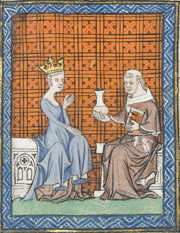
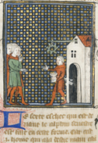
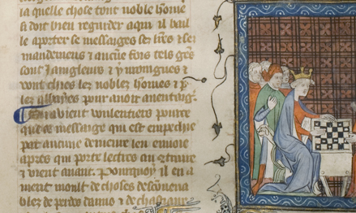

Le Jeu des échecs moralisé (The Moralized Game of Chess)
University of Chicago Library MS 392
View the digital manuscript
Le Jeu des échecs moralisé (The Moralized Game of Chess) was written in Latin in the 13th century by Jacobus de Cessolis, an Italian Dominican friar. Cessolis took advantage of the opportunity to use a relatively new game, chess, to describe an ideal society through the medium of the chessboard. Written at a time of political instability, his work was read centuries later as a guide to proper behavior, both because of the readily understood nature of the metaphor and the references to biblical and classical literature that buttress the argument.
Each piece and its attributes is thoroughly described; for example, if the Knight can move in front of a Pawn it is because the role and responsibility of the Knight is to protect the commoner - who in turn serves the Knight. Morality is prescribed: the King who leaves his wife for another acts against nature; the Queen must be chaste, docile, and concerned with the raising of her sons; the peasant should respect the laws and serve the lord. Each of the eight Pawns stands for a group of people, such as innkeepers or doctors and apothecaries. An intertwined society of mutual obligation is neatly laid out, as Cessolis says, "talents are distributed so that no one suffices by himself, but only has value in his relationships with others."
With the focus on societal behavior rather than on the rules of the game, it would be nearly impossible to learn to play the game of chess from this text, but it is clear that the rules of medieval chess are quite different from those in place today. The King, for example, was restricted in his movement to the first three rows of the board, as it is his duty to stay close to home and defend the country.
